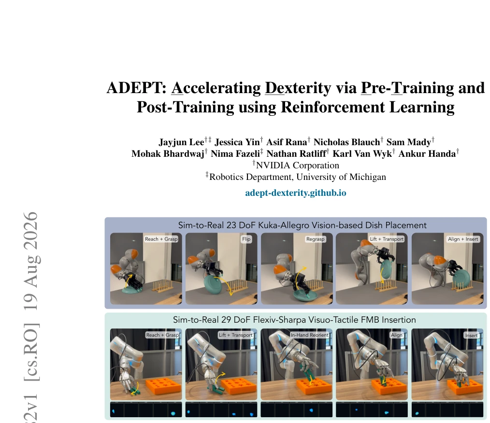
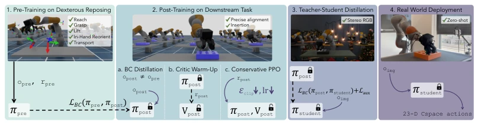
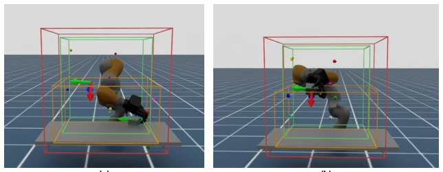
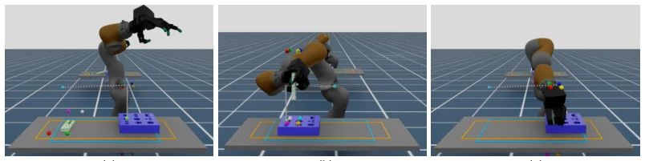
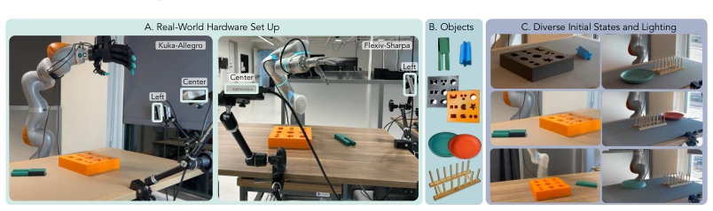
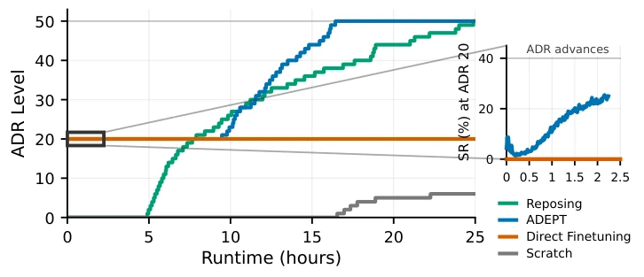
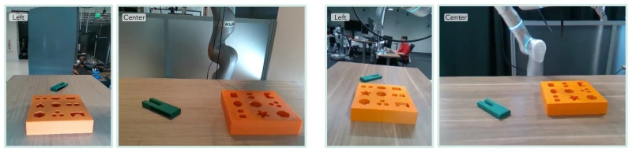
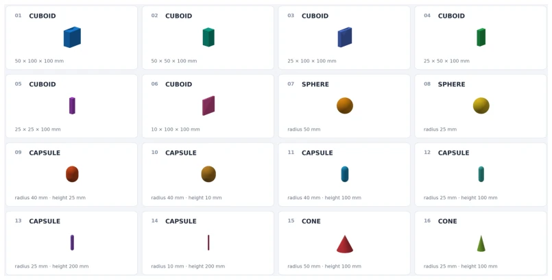
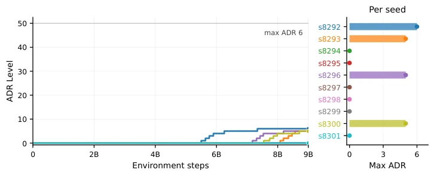
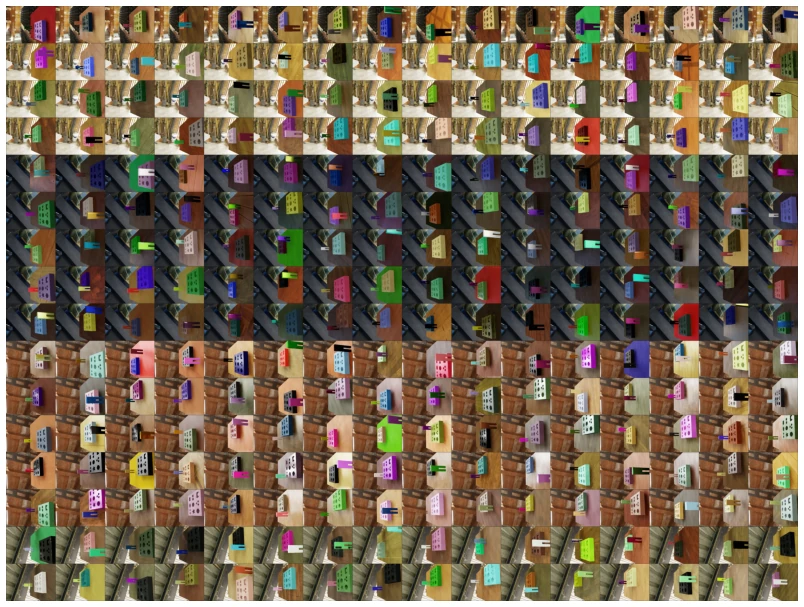

The ADEPT RL framework, which follows the 'practice basics before specialized courses' approach, is indeed quite substantial. It transforms the dexterous manipulation of high-DoF manipulators from 'feeling around in the dark from scratch' to 'having a lineage'. Through pre-training on general replay tasks followed by fine-tuning on downstream tasks, it successfully solves the Sim-to-Real transfer challenge. However, do not celebrate too early; this method has high hardware requirements. The Flexiv-Sharpa only maximized success rates thanks to tactile sensors, while the pure vision version still easily gets 'blind' under occlusion. Moreover, if pre-training tasks are too simple, encountering completely unseen objects (like a large flat-bottomed plate), the policy still needs to rely on post-training to re-'enlighten', not truly general. Overall, it trades engineering-based stable training techniques (such as Critic Warm-up) for reproducible dexterity, but there is still a long way to go in perceptual robustness. Do not expect it to flexibly handle all unknown scenarios like humans, especially in complex occlusion environments.
Dexterous manipulation of high-DoF manipulators has always been a hard bone in embodied intelligence. Existing works such as Dextreme [2] and Solving Rubik's Cube [1] demonstrate dexterity, but most rely on state observation or external grippers, and are difficult to transfer across tasks. Training RL policies from scratch is not only sample inefficient but also prone to forgetting pre-trained skills in downstream tasks [10]. SimToolReal [21] attempts zero-shot tool use but relies on object pose estimation rather than raw perception. ADEPT aims to solve this pain point: learning long-horizon tasks directly from raw RGB/tactile perception without demonstrations or pose estimation. The core motivation is to avoid relearning basic skills (such as grasping, redirecting) for each new task, but instead build general priors through pre-training, then adapt to contact-intensive tasks through structured post-training, achieving true Sim-to-Real zero-shot transfer and lowering the learning threshold for new tasks.

Figure 1: ADEPT enables sim-to-real RL of high DoF arm-hand robots to reach, grasp, lift, reorient, transport, align, and insert. We demonstrate on a 23 DoF Kuka-Allegro from two RGB cameras and on a 29 DoF Flexiv-Sharpa from two RGB cameras and five fingertip tactile sensors.
The overall process is divided into three stages: pre-training, post-training, and distillation deployment. First, train a general 'replay' policy using PPO in simulation, covering basic skills such as grasping, lifting, and redirecting. Second, perform structured post-training for downstream tasks, which is the core innovation. Direct fine-tuning leads to policy collapse, so ADEPT adopts a three-step method: (1) Behavior Cloning distillation, transferring pre-trained policy knowledge to the new observation space; (2) Critic Warm-up, freezing the Actor to train a new Critic to align value estimation; (3) Conservative PPO update, reducing the Actor learning rate to prevent catastrophic forgetting. Additionally, a full joint space (Cspace) Geometric Fabric is introduced, ensuring hardware safety (anti-collision, limit) while exposing complete kinematic degrees of freedom to the policy, avoiding traditional methods being limited to low-dimensional subspaces. Finally, through two-stage distillation, the state-space Teacher is transformed into a perception Student, supporting zero-shot deployment and ensuring a smooth transition from simulation to reality.

Figure 2: ADEPT Overview. (1) Pre-train (πpre, Vpre) via PPO on a generic reposing task. (2) Post-train into (πpost, Vpost) for the downstream contact-rich task via BC distillation, frozen actor critic warm-up, and conservative PPO. (3) Distill πpost into a stereo RGB student πstudent. (4) Deploy πstudent zero-shot on the real robot.

Figure 5: Reposing Task. Visualizes the out-of-bound range in red, the goal sampling range in green, and the object spawn range in orange. (a) visualizes a frame of the initial grasp of the object and (b) visualizes a frame where the robot has completed the task by reaching the target pose frame. The object point clouds can be seen in green spheres, which are on the object.

Figure 7: Downstream FMB Task. Visualizes the peg (orange) and board (sky blue) spawn ranges, object keypoints and goal pose keypoints. Grey keypoints represent the path set by the ADR level (denoted goal path annealing). At ADR 0, the goal is set to where the light blue sphere is placed and at ADR 50, the goal is set to the insertion goal where the light green sphere is placed. (a) shows sample initialization of the scene where the peg is dropped on to the table. In (b), we show how the reposing teacher reaches the goal at ADR 20, which is above the board. In (c), we visualize a sample policy rollout that inserts the peg into the board successfully where the keypoints align by the matching colors. The object point clouds in green spheres can be seen on the peg.
Experiments were conducted on a 23 DoF Kuka-Allegro and a 29 DoF Flexiv-Sharpa, with tasks including FMB peg insertion and plate placement. Evaluation metrics are success rate (SR) and time consumption. Results show that the ADEPT policy deployed zero-shot in the real world, the Vision version achieved 30%-50% success rate on FMB tasks, and with tactile added, Flexiv-Sharpa improved to 80%. In terms of speed, a single task requires only 5-10 seconds, which is 2-14 times faster than the FMB parallel gripper scheme. Ablation studies show that reducing the Actor learning rate and Critic Warm-up are key to preventing policy collapse, while tightening the Clip parameter has less impact. Tactile perception is crucial for solving the grasp confidence problem; pure vision policies easily retry repeatedly due to inability to judge contact state, leading to task failure.

Figure 4: Real-world setup. (A) The 23 DoF Kuka-Allegro and 29 DoF Flexiv-Sharpa platforms, each with two RealSense RGB cameras (left and center). (B) FMB pegs and boards, plates, and dish rack. (C) Diverse initial states and lighting used in real-world testing.

Figure 8: Training curves on FMB peg insertion comparing (1) training from scratch, (2) direct PPO finetuning of the pretrained reposing teacher, and (3) ADEPT post-training. Blue inset: success-rate collapse for (2) during transfer.

Figure 10: Real-world camera views for (a) Kuka-Allegro and (b) Flexiv-Sharpa setups.
其他图片Other Figures

Figure 6: 16 primitive objects used during pre-training reposing task. The scale and physical prop- erties of the objects are randomized during pre-training.

Figure 9: Training curves across different seeds for training from scratch. ADEPT post-training reliably converges to a solution while most seeds for training from scratch either plateau or take a very long time to train for a fixed compute budget.

Figure 11: A sample 16x16 grid of visual randomizations on the left camera of the FMB training scene for distillation.